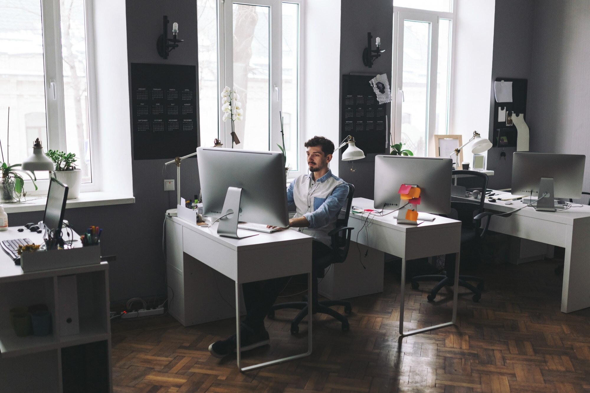

AktuelleWelt wurde mit einer klaren Vision gegründet: eine Plattform zu schaffen, die die neuesten Entwicklungen aus den Bereichen Kunst, Sport und Kultur miteinander verbindet. Die Idee entstand 2018, als eine Gruppe von Journalisten, Kunstliebhabern und Sportenthusiasten erkannte, dass es an einer modernen und vielseitigen Quelle für Nachrichten in diesen Bereichen mangelte. Es war ein Zusammenschluss von kreativen Köpfen, die ihre Leidenschaft und ihr Wissen nutzen wollten, um eine neue Art der Informationsvermittlung zu schaffen.
Die erste Ausgabe von AktuelleWelt erschien im Jahr 2019, und von Anfang an war klar, dass die Seite mehr bieten sollte als nur aktuelle Nachrichten. Sie wollte eine Brücke zwischen den Welten der Kunst, des Sports und der Kultur schlagen und den Lesern eine ganzheitliche Perspektive auf die Ereignisse bieten. Die ersten Artikel befassten sich mit bedeutenden kulturellen Ereignissen, den Olympischen Spielen und der wachsenden Kunstszene in Deutschland.
Mit wachsendem Erfolg und einer stetig wachsenden Leserschaft entschied sich AktuelleWelt, auch interaktive Elemente einzuführen – von Experteninterviews bis hin zu interaktiven Online-Veranstaltungen. Diese Entscheidung trug dazu bei, die Verbindung zu den Lesern zu stärken und eine engagierte Community aufzubauen, die sich aktiv an Diskussionen und Debatten über Kunst, Sport und Kultur beteiligte.
Heute ist AktuelleWelt nicht nur eine Nachrichtenplattform, sondern auch ein Ort des Austauschs und der Inspiration. Die Geschichte von AktuelleWelt ist die Geschichte einer Leidenschaft für Kunst, Sport und Kultur, die in jeder Ausgabe weiterlebt und die Seite zu einer führenden Quelle für hochwertige Inhalte macht.
Unsere Mission bei AktuelleWelt ist es, eine Plattform zu bieten, die nicht nur über Kunst, Sport und Kultur berichtet, sondern auch eine tiefere Verbindung zu diesen Themen herstellt. Wir streben danach, den Lesern nicht nur aktuelle Nachrichten zu liefern, sondern auch wertvolle Einblicke, Hintergrundgeschichten und Perspektiven, die das Verständnis und die Wertschätzung für diese Bereiche fördern. Unser Ziel ist es, die kulturelle und sportliche Landschaft mit einem breiten Spektrum an Inhalten zu bereichern und dabei stets die Qualität und Relevanz der Informationen zu wahren.
Ein weiteres Ziel von AktuelleWelt ist es, eine Gemeinschaft von Kunst- und Sportbegeisterten zu schaffen, die sich aktiv austauschen und voneinander lernen können. Wir glauben an die Kraft der Kultur und des Sports, Menschen zu verbinden, zu inspirieren und neue Perspektiven zu eröffnen. Daher setzen wir uns dafür ein, regelmäßig interaktive Formate anzubieten, die den Dialog fördern und den Lesern ermöglichen, ihre eigenen Gedanken und Erfahrungen zu teilen.
Wir sind bestrebt, mit jeder Ausgabe ein Bewusstsein für die vielfältigen und oft unterschätzten Facetten von Kunst und Sport zu schaffen und diese Themen in einem modernen und ansprechenden Format zu präsentieren. Dabei bleiben wir stets neugierig und offen für neue Ideen, um AktuelleWelt als führende Quelle für Kultur- und Sportnachrichten weiter auszubauen.
